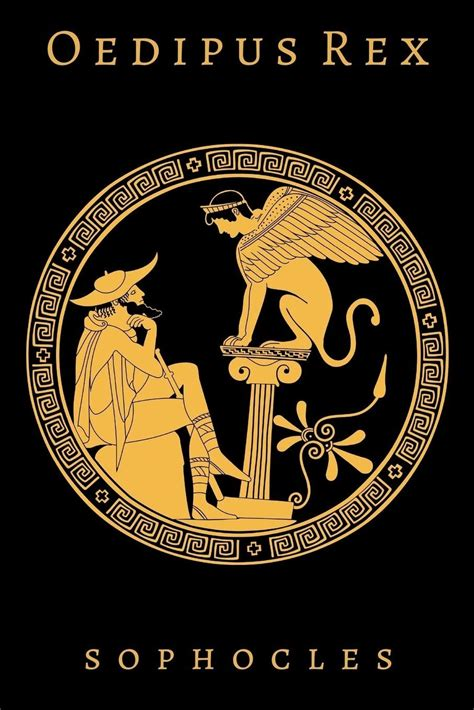

Oedipus Rex
Greek Tragedy by Sophocles (c. 429 BC)

The Athenian tragedy by Sophocles, staged in the 5th century BC. Set in plague-stricken Thebes, King Oedipus summons Tiresias seeking the cause of the contamination; Tiresias reluctantly reveals that Oedipus himself is the murderer of Laius.
Attached Predicates & Semantic Relations
| rdf:type Entity Type | dbo:Play |
| owl:sameAs Authority Match (sameAs) | Wikidata Q148643x ↗ |
RDF Graph Fragment (Turtle)
@prefix : .
@prefix crm: .
@prefix rdfs: .
@prefix schema: ;
schema:character :tiresias ;
schema:contentLocation :thebes .